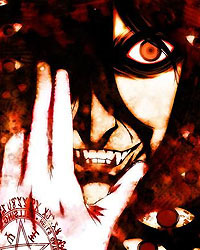

Forums galactiques > Assemblée Galactique : diplomatie officielle > Reb-Cubea
Pages : 1
| Vladimir Guez Respect diplomatique : 11  06/06 ETU 18:18 | Score : 11 Détails ne pas poster SVP
Dieu à dit: Et que l'homme soit. L'homme à dit: Et que le Barbecue soit. C'est ainsi que le Barbecue naquit, apportant bonheur, félicité et chipots mayonnaise. Aussi, sur un planète éloignée, très éloignée, très très éloignée, vu le jour une religion, La Reb-cubea . Cette secte avait pour lieu de prière le noir charbon et pour objet de culte: Le divin Barbecue. "Que ta sainte grille nous offre joie et nutrition saine, que tes brûlantes flammes illuminent nos horizons miniers, que ton infini générosité puisse nous régaler de merguez craquante dessus et tendre en dessous." - Q'on apporte l'hérétique! - Q'on apporte l'hérétique. - Q'on apporte l'hérétique. ... - Faites place à l'hérétique - Faites place à l'hérétique - Faites place a l'hérétique...mais quel idiot je fais, c'est moi le chef. Un homme entra dans le périmètre lumineux que formait les torche. Un cercle s'était formé autour des deux hommes. L'un debout, grand, majestueux, vêtu d'une tenue de cérémonie rouge. Il observait son alter ego, un bourgeois en piteux état, le regard empli de larmes, il tomba à genoux devant le grand prêtre et fondit en pleur. Le seigneur interrogea l'hérétique d'une voix de bariton, toute pitié disparue - Peux tu me rappeler pourquoi tu es devant moi aujourd'hui ? - J..je..j'ai... - Dis le! - J'ai utiliser une gazinière... Un frisson parcourut la foule. Des slogans fanatiques retentirent dans tous le périmètre. - Tu sais donc ce qui t'attend. - Pi...pipi...pitié. - Tu as péché, il est trop tard à présent - Naaaaaaaaaaaan - Qu'on le jette dans les flamme de la fausse du cochon volant à tête de chenille! On saisit le malheureux par les membres. Il fut attaché sur une planche que quatre hommes en toge blanche portèrent jusqu'à une fosse d'ou sortait des volutes de flammes ardentes. "Que ton âme soit purgée. Que le ketchup coulant dans tes veines se déverse abondamment dans le feu du désespoir. Que ton corps soit immolé dans la divine sauce barbecue. Meurt, enfant du diable! D'un seul élan, les quatre fanatiques balancèrent leur charge dans le trou. Un ultime cri de souffrance retentit sur la plaine... |
Pages : 1
Forums galactiques > Assemblée Galactique : diplomatie officielle > Reb-Cubea